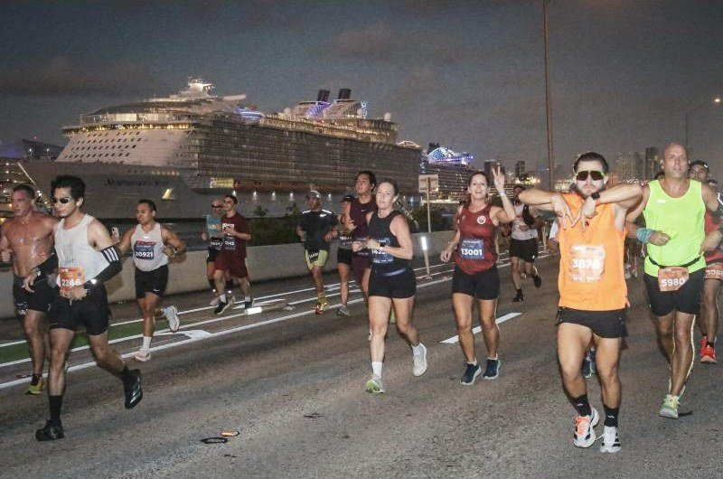

I'm a Product Designer who enjoys turning complex operational challenges into intuitive experiences.
From 2021 to 2026 I designed software for fundraising and endurance organizations, working across event registration, ticketing, auctions, volunteer management, and participant experiences.
Outside of design, you'll usually find me training for my next race, learning about AI, or playing guitar.
Clarity over more features
The people I design for are often busy and under pressure. A clear screen helps them more than another option.
Options side by side
When a team disagrees, I put the workflows next to each other and let the comparison make the case.
Honest about limits
I'd rather say what a product can't do yet than hide it. It's how I designed Mo, and how I like to work.
Curious about people
I like learning how people actually use products, and why.

Endurance athlete & designer
Being part of the endurance community gives me a unique perspective when designing products for the people who organize, support, and participate in these events. It's also where Mo came from.